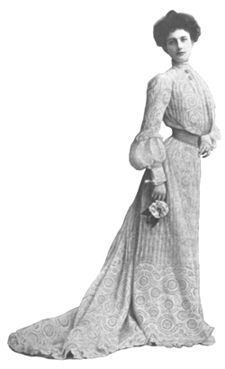

|
Clothing evolves over the century
by Laura Bohon
BOH00002@BYUI.EDU
Scroll Staff
 |
| Jalene Palmer, a senior from Boise, Idaho, models one of the many trends of the new millennium. Brian Schwieder / Scroll |
|
One of the earmarks of civilization, it seems, is an attention to fashion and appearance. The ancient Egyptian women had eyeliner, the ancient Greeks and Romans had togas and strappy sandals, the Renaissance had wimples, and the Colonial Era had six-foot powdered wigs. Although wimples and towering wigs have are now a part of the past, women’s fashions have continued to change drastically. Here is a quick look of the fashion evolution of the 20th century.
1900 — A New Century — To describe fashion at the turn of the last century, one must look ten years before. In 1890, a fashion revolution took place with the introduction of the Gibson Girl: tall, athletic and self-confident. The style became distinctly “American”: a balance between the leisurely and the practical.
1920 — The Roaring Twenties — The twenties were the decade of the “flapperm” with her boy-cut hair, slim dresses and flippant manner. Though the flapper is seen as an example of fashion freedom, her style required layers of makeup and intense dieting in addition to chest-binding to create a svelte look.
1930-1945 — The War Era — During the Depression and World War II, women’s fashion became more mature, including fuller figures, longer skirt lengths and shoulder pads, which had been adopted from male tailoring. The focus of women’s fashion became security.
1950 — The Postwar Era — The years immediately following the close of World War II created a boom in celebrating youth culture and glorifying innocence and adolescence. Dresses became bell-shaped once again (they had not been for half a century), and blonde hair became popular because of its sense of purity and its easiness to achieve.
1960 — Backlash — The backdrop of the 1960s, with its violent civil rights battles, led to a rebellion against the consumerism of the Postwar Era. Women opted for free-flowing, loose clothing and uncurled hair, demonstrating their freedom from commercialism as they rebelled against eyeliner and lipstick.
1970 — Saturday Night Fever — The unstructured fashion of the tumultuous ’60s morphed into the sequined glory of the Disco era. Women once again embraced makeup and curling irons and vibrant patterns. On the darker side of fashion lurked a new epidemic among young women called anorexia nervosa as they pushed themselves to become as thin as the models they idolized.
 |
| An afternoon gown shows the common fashion at the turn of the 20th century. photo courtesy Holmes & Meier Publishers, Inc. |
|
1980 — Flashdance — The individualism and narcissism of the ’80s led to a new breed of Americans: “Yuppies,” or “young upwardly-mobile professionals,” contributed to the fashion of the decade since they were prey to advertising manipulations and were major consumers of designer clothing and expensive cosmetics.
1990 — Anything Goes — Fashion had become so diversified by the end of the century that almost anything was acceptable —from the hip-hop-infused fashions of the late ’80s early ’90s to the grunge phase beginning around 1992 to prep-school style. Women everywhere were presented with thousands of options for their own personal style.
2000 — A New Beginning — With the dawn of the new century came a new set of fashion trends. The advent of a technological age presented women with a new fashion: sleek, streamlined and subtle. This trend changed in the wake of the terrorists attacks Sept. 11, 2001; many fashion designers responded to the attacks by infusing their clothes with patriotic designs and a nostalgic Americana quality.
In the shortening of hemlines and exclusion of ruffles, one may understand the changes in america’s culture. Fashion does not dictate life; life dictates fashion, and both have changed immensely in the last century.
|